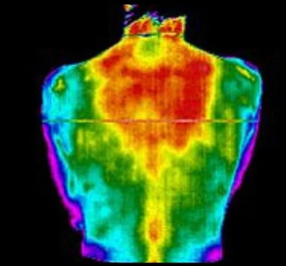
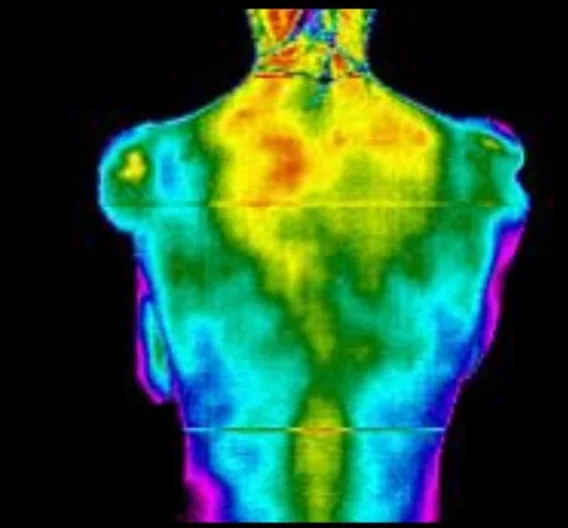

Most care chases symptoms. We look at the system underneath them — your spine and nervous system — to understand what's actually driving the problem. Take five minutes to explore how whole-system chiropractic works.
Your nervous system runs through your spine and reaches every part of your body. When a region is stressed or out of alignment, the effects rarely stay local. Tap a region to see what it connects to.
This is education, not a diagnosis — symptoms can have many causes. That's exactly why we examine before we recommend anything: objective findings first, care second.
Pain is usually the last thing to show up and the first thing to leave — which is why chasing it rarely fixes anything for long. Flip the view below to see what we mean.
"We look deeper to understand what may be driving the problem."


A real patient scan from our office. Warmer colors indicate areas of heat along the spine associated with nervous system stress. Individual results vary — that's why everyone gets their own baseline.
You can't correct what you can't see. Before we recommend anything, we build a clear, measurable picture of how your spine and nervous system are functioning — and we re-measure as care progresses, so you can see your progress instead of taking our word for it.
Feeling better and functioning better are two different finish lines. Our care moves through three phases — each with its own goal, and a re-exam to prove it's working. Tap a phase.
Six quick questions. No email required, nothing stored — just an honest gut-check on the signals your body may already be sending.
This self-check is educational and not a medical diagnosis. Answers stay on your device.
Your first visit includes the consultation, exam, thermal scan, and X-rays when appropriate — everything you just read about — for $49.
New patients only · Gallatin, TN · Same-week appointments usually available